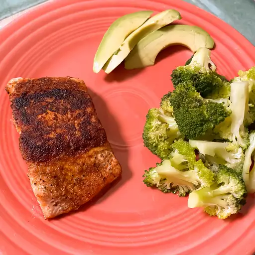

Blackened Salmon Fillet
◂

Fire up succulent blackened salmon with an exciting blend of Cajun-style
spices!
Ingredients
- 2 tablespoons ground paprika
- 1 tablespoon ground catenne pepper
- 1 tablespoon onion powder
- 2 teaspoons salt
-
1/2 teaspoon ground white pepper
-
1/2 teaspoon ground black pepper
-
1/4 teaspoon dried basil
-
1/4 teaspoon dried oregano
- 4 salmon fillets, skin and bones removed
-
1/2 cup unsalted butter, melted
Steps
-
Step 1
Mix paprika, cayenne pepper, onion
powder, salt, white and black pepper, thyme, basil, and oregano
together in a small bowl.
-
Step 2
Brush salmon fillets on both sides
with 1/4 cup butter, and sprinkle evenly with the spice mixture.
-
Step 3
Heat 2 tablespoons melted butter in a
large, heavy skillet over high heat. Add salmon and cook until
blackened, 2 to 5 minutes. Lift fillets, add remaining melted butter
to the skillet, and flip fillets into the butter. Cook until the
other side is blackened and fish flakes easily with a fork, 3 to 5
minutes.